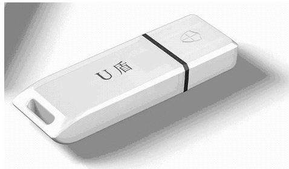
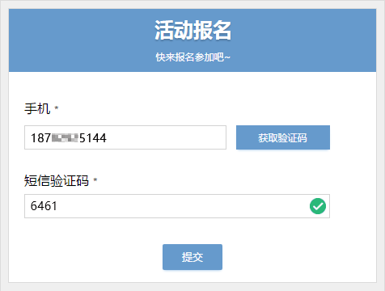
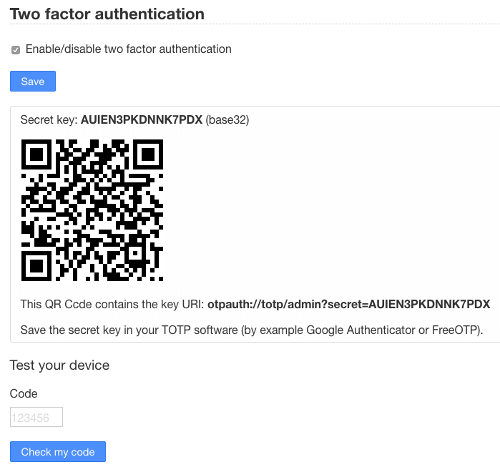
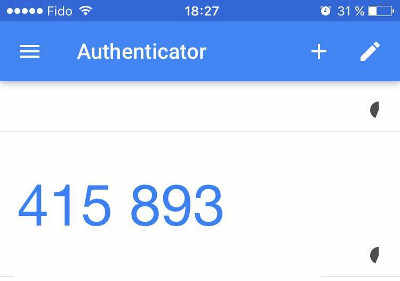
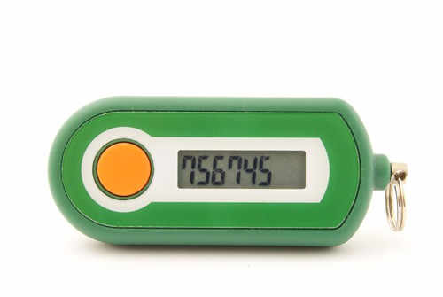
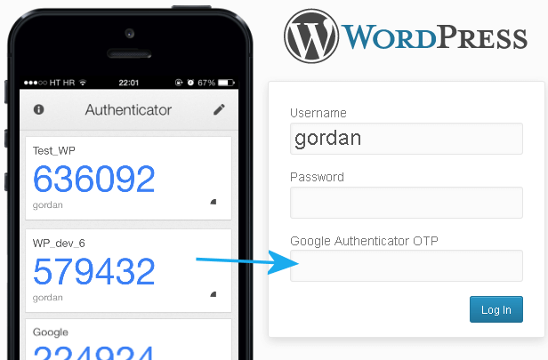

所谓认证（authentication）就是确认用户的身份，是网站登录必不可少的步骤。
密码是最常见的认证方法，但是不安全，容易泄露和冒充。
越来越多的地方，要求启用双因素认证（Two-factor authentication，简称 2FA）。本文介绍它的概念和实现方法。
一般来说，三种不同类型的证据，可以证明一个人的身份。
- 秘密信息：只有该用户知道、其他人不知道的某种信息，比如密码。
- 个人物品：该用户的私人物品，比如身份证、钥匙。
- 生理特征：该用户的遗传特征，比如指纹、相貌、虹膜等等。
这些证据就称为三种"因素"（factor）。因素越多，证明力就越强，身份就越可靠。
双因素认证就是指，通过认证同时需要两个因素的证据。
银行卡就是最常见的双因素认证。用户必须同时提供银行卡和密码，才能取到现金。
常用的双因素组合是密码 + 某种个人物品，比如网上银行的 U 盾。用户插上 U 盾，再输入密码，才能登录网上银行。

但是，用户不可能随时携带 U 盾，手机才是最好的替代品。密码 + 手机就成了最佳的双因素认证方案。
国内的很多网站要求，用户输入密码时，还要提供短消息发送的验证码，以证明用户确实拥有该手机。

但是，短消息是不安全的，容易被拦截和伪造，SIM 卡也可以克隆。已经有案例，先伪造身份证，再申请一模一样的手机号码，把钱转走。
因此，安全的双因素认证不是密码 + 短消息，而是下面要介绍的 TOTP。
TOTP 的全称是"基于时间的一次性密码"（Time-based One-time Password）。它是公认的可靠解决方案，已经写入国际标准 RFC6238。
它的步骤如下。
第一步，用户开启双因素认证后，服务器生成一个密钥。
第二步：服务器提示用户扫描二维码（或者使用其他方式），把密钥保存到用户的手机。也就是说，服务器和用户的手机，现在都有了同一把密钥。

注意，密钥必须跟手机绑定。一旦用户更换手机，就必须生成全新的密钥。
第三步，用户登录时，手机客户端使用这个密钥和当前时间戳，生成一个哈希，有效期默认为30秒。用户在有效期内，把这个哈希提交给服务器。

第四步，服务器也使用密钥和当前时间戳，生成一个哈希，跟用户提交的哈希比对。只要两者不一致，就拒绝登录。
仔细看上面的步骤，你可能会有一个问题：手机客户端和服务器，如何保证30秒期间都得到同一个哈希呢？
答案就是下面的公式。
# floor — 舍去法取整 TC = floor((unixtime(now) − unixtime(T0)) / TS)
上面的公式中，TC 表示一个时间计数器，unixtime(now)是当前 Unix 时间戳，unixtime(T0)是约定的起始时间点的时间戳，默认是0，也就是1970年1月1日。TS 则是哈希有效期的时间长度，默认是30秒。因此，上面的公式就变成下面的形式。
TC = floor(unixtime(now) / 30)
所以，只要在 30 秒以内，TC 的值都是一样的。前提是服务器和手机的时间必须同步。
接下来，就可以算出哈希了。
TOTP = HASH(SecretKey, TC)
上面代码中，HASH就是约定的哈希函数，默认是 SHA-1。
TOTP 有硬件生成器和软件生成器之分，都是采用上面的算法。

（说明：TOTP 硬件生成器）

（说明：Google Authenticator 是一个生成 TOTP 的手机 App）
TOTP 很容易写，各个语言都有实现。下面我用 JavaScript 实现2fa来演示一下真实代码。
首先，安装这个模块。
$ npm install --save 2fa
然后，生成一个32位字符的密钥。
var tfa = require('2fa'); tfa.generateKey(32, function(err, key) { console.log(key); }); // b5jjo0cz87d66mhwa9azplhxiao18zlx
现在就可以生成哈希了。
var tc = Math.floor(Date.now() / 1000 / 30); var totp = tfa.generateCode(key, tc); console.log(totp); // 683464
双因素认证的优点在于，比单纯的密码登录安全得多。就算密码泄露，只要手机还在，账户就是安全的。各种密码破解方法，都对双因素认证无效。
缺点在于，登录多了一步，费时且麻烦，用户会感到不耐烦。而且，它也不意味着账户的绝对安全，入侵者依然可以通过盗取 cookie 或 token，劫持整个对话（session）。
双因素认证还有一个最大的问题，那就是帐户的恢复。
一旦忘记密码或者遗失手机，想要恢复登录，势必就要绕过双因素认证，这就形成了一个安全漏洞。除非准备两套双因素认证，一套用来登录，另一套用来恢复账户。
（正文完）
本文转自 https://www.ruanyifeng.com/blog/2017/11/2fa-tutorial.html，如有侵权，请联系删除。
[1] 案例: http://media.people.com.cn/n/2014/0227/c40606-24477072.html[2] TOTP: https://en.wikipedia.org/wiki/Time-based_One-time_Password_Algorithm[3] RFC6238: https://tools.ietf.org/html/rfc6238[4] `2fa`: https://github.com/simontabor/2fa[5] Multi-factor authentication: https://en.wikipedia.org/wiki/Multi-factor_authentication[6] Time-based One-time Password Algorithm: https://en.wikipedia.org/wiki/Time-based_One-time_Password_Algorithm[7] Enabling Two-Factor Authentication For Your Web Application: https://techblog.bozho.net/enabling-two-factor-authentication-web-application/[8] simontabor/2fa: https://github.com/simontabor/2fa[9] 创意共享3.0许可证: http://creativecommons.org/licenses/by-nc-nd/3.0/deed.zh[10] https://www.ruanyifeng.com/blog/2017/11/2fa-tutorial.html: https://www.ruanyifeng.com/blog/2017/11/2fa-tutorial.html